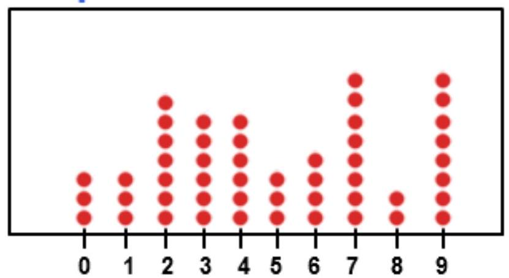
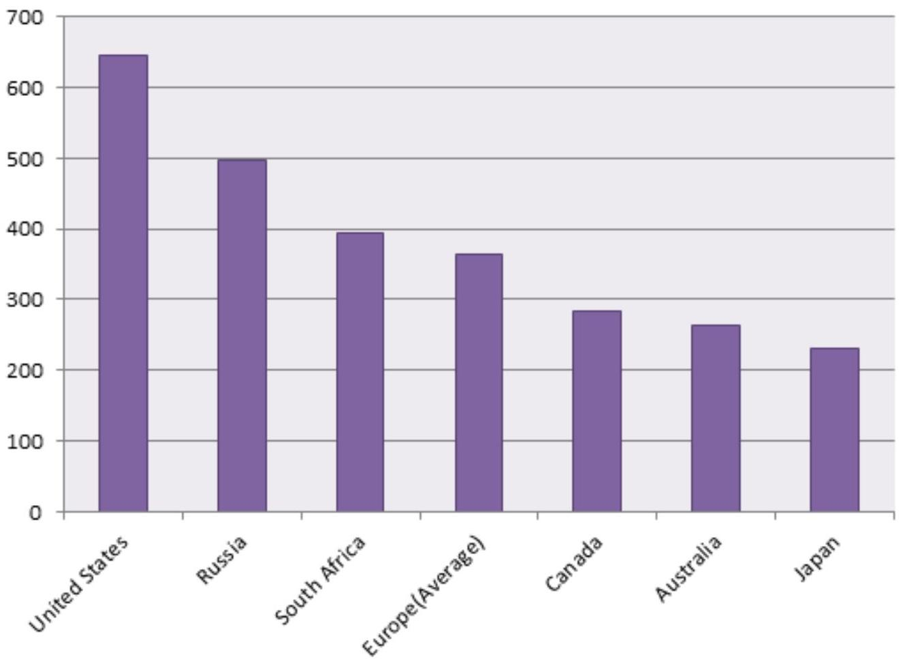
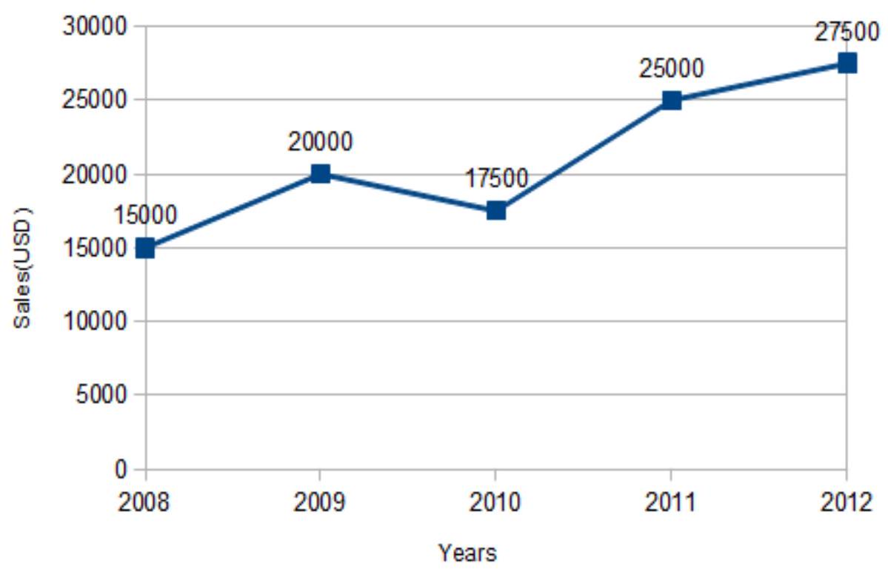
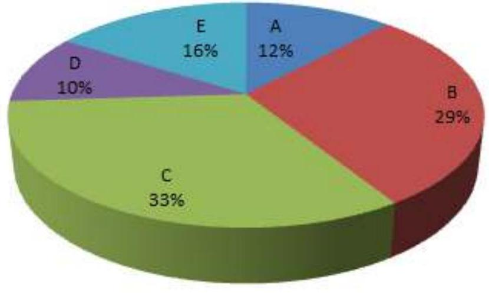
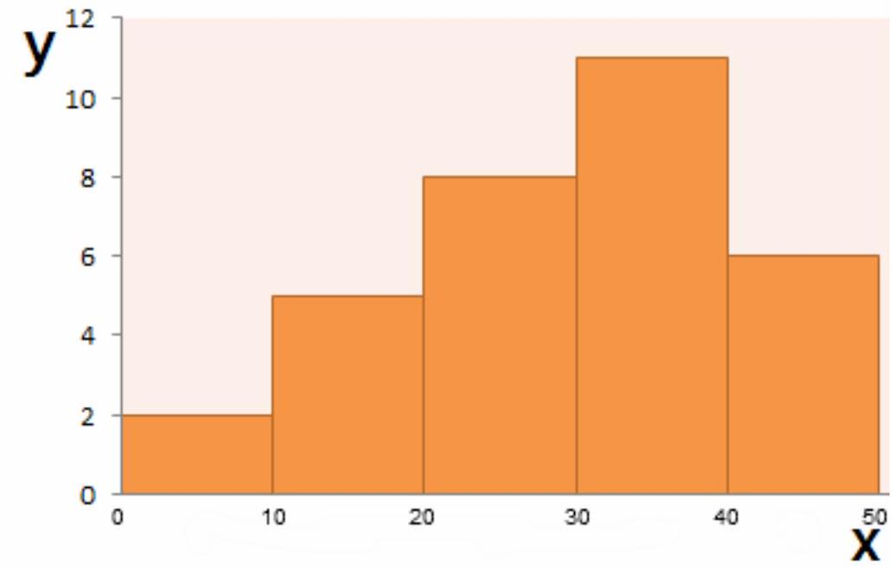
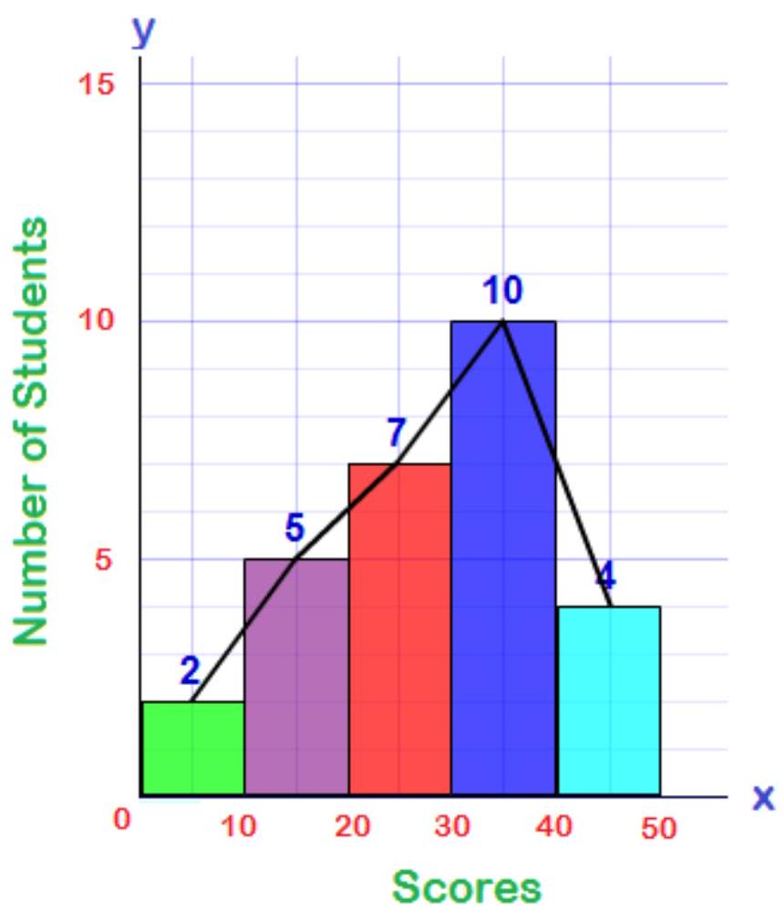
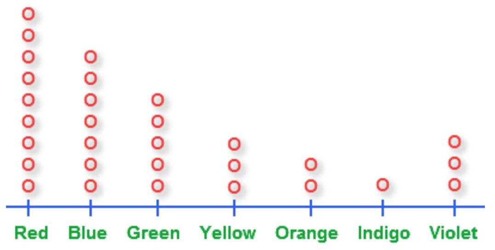
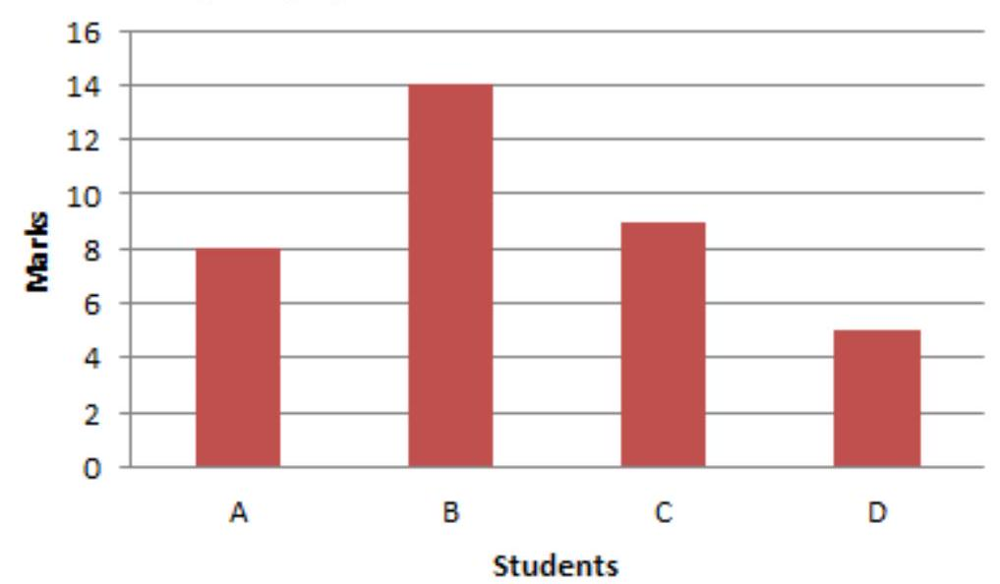
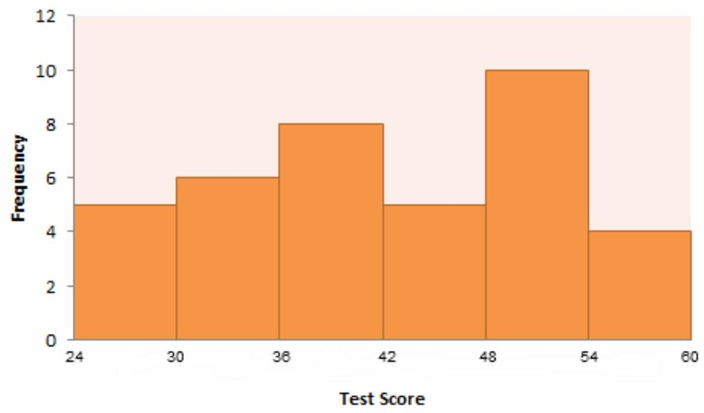
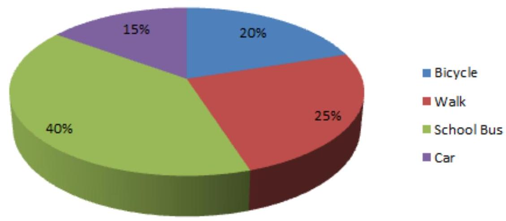

CHAPTER 11: INTRODUCTION TO MODELING (Continued)
Graphical Representation of statistical Data
Statistics is a special subject that deals with large (usually) numerical data. The statistical data can be represented graphically. In fact, the graphical representation of statistical data is an essential step during statistical analysis.
Statistical surveys and experiments provides valuable information about numerical scores. For better understanding and making conclusions and interpretations, the data should be managed and organized in a systematic form. A graph is the representation of data by using graphical symbols such as lines, bars, pie slices, dots etc. A graph does represent a numerical data in the form of a qualitative structure and provides important information.
Let us go ahead and study about various types of graphical representations of the data.
Dot Plots
The dot plot is one of the most simplest ways of graphical representation of the statistical data. As the name itself suggests, a dot plot uses the dots. It is a graphic display which usually compares frequency within different categories.
The dot plot is composed of dots that are to be plotted on a graph paper.
A dot plot may look like:
Dotplot of Random Values
In the dot plot, every dot denotes a specific number of observations belonging to a data set. One dot usually represents one observation.
These dots are to be marked in the form of a column for each category. In this way, the height of each column shows the corresponding frequency of some category.
The dot plots are quite useful when there are small amount of data is given within the small number of categories.
Bar Graph
A bar graph is a very frequently used graph in statistics as well as in media. A bar graph is a type of graph which contains rectangles or rectangular bars. The lengths of these bars should be proportional to the numerical values represented by them. In bar graph, the bars may be plotted either horizontally or vertically. But a vertical bar graph (also known as column bar graph) is used more than a horizontal one.
A vertical bar graph is shown below:
Number of students went to different states for study:
The rectangular bars are separated by some distance in order to distinguish them from one another. The bar graph shows comparison among the given categories.
Mostly, horizontal axis of the graph represents specific categories and vertical axis shows the discrete numerical values.
Line Graph
A line graph is a kind of graph which represents data in a way that a series of points are to be connected by segments of straight lines. In a line graph, the data points are plotted on a graph and they are joined together with straight line.
A sample line graph is illustrated in the following diagram:
The line graphs are used in the science, statistics and media. Line graphs are very easy to create. These are quite popular in comparison with other graphs since they visualize characteristics revealing data trends very clearly. A line graph gives a clear visual comparison between two variables which are represented on X -axis and Y -axis.
Circle Graph
A circle graph is also known as a pie graph or pie chart. It is called so since it is similar to slice of a "pie". A pie graph is defined as a graph which contains a circle which is divided into sectors. These sectors illustrate the numerical proportion of the data.
A pie chart are shown in the following diagram:
The arc lengths of the sectors, in pie chart, are proportional to the numerical value they represent. Circle graphs are quite commonly seen in mass media as well as in business world.
Histogram and Frequency Polygon
The histograms and frequency polygons are very common graphs in statistics. A histogram is defined as a graphical representation of the mutually exclusive events. A histogram is quite similar to the bar graph. Both are made up of rectangular bars. The difference is that there is no gap between any two bars in the histogram. The histogram is used to represent the continuous data.
A histogram may look like the following graph:
The frequency polygon is a type of graphical representation which gives us better understanding of the shape of given distribution. Frequency polygons serve almost the similar purpose as histograms do. But the frequency polygon is quite helpful for the purpose of comparing two or more sets of data. The frequency polygons are said to be the extension of the histogram. When the midpoints of tops of the rectangular bars are joined together, the frequency polygon is made. Let us have a look at a sample of frequency polygon:
Examples
Few examples of graphical representation of statistical data are given below:
Example 1: Draw a dot plot for the following data.
| Favorite Colors | Red | Blue | Green | Yellow | Orange | Indigo | Violet |
|---|---|---|---|---|---|---|---|
| Number of Students | 9 | 7 | 5 | 3 | 2 | 1 | 3 |
Solution:
The dot plot for the following data is given below:
Example 2: Plot a bar graph from the data given below.
| Students | A | B | C | D |
|---|---|---|---|---|
| Marks | 8 | 14 | 9 | 5 |
Solution:
The following bar graph is obtained:
Example 3: Draw a histogram from the given data.
| Test Score | 24-30 | $\mathbf{3 0 - 3 6}$ | $\mathbf{3 6 - 4 2}$ | $\mathbf{4 2 - 4 8}$ | $\mathbf{4 8}-\mathbf{5 4}$ | $\mathbf{5 4 - 6 0}$ |
|---|---|---|---|---|---|---|
| Frequency | 5 | 6 | 8 | 5 | 10 | 4 |
Solution:
We drew the following histogram:
Example 4: The percentages of students who use the different methods of transportation are as follows:
$40 \%$ go by school bus
$25 \%$ go by walk
$20 \%$ go by bicycle
and rest $15 \%$ go by car. Draw a pie chart.
Solution: The pie graph of the above data is:
Method of Transportation to school
Spatial Model
Spatial modeling is an analytical process conducted in conjunction with a geographical information system (GIS) in order to describe basic processes and properties for a given set of spatial features.
The objective of spatial modeling is to be able to study and simulate spatial objects or phenomena that occur in the real world and facilitate problem solving and planning.
Spatial modeling is an essential process of spatial analysis. With the use of models or special rules and procedures for analyzing spatial data, it is used in conjunction with a GIS to properly analyze and visually lay out data for better understanding by human readers. Its visual nature helps researchers more quickly understand the data and reach conclusions that are difficult to formulate with simple numerical and textual data.
Spatial analysis or spatial statistics includes any of the formal techniques which study entities using their topological, geometric, or geographic properties. Spatial analysis includes a variety of techniques, many still in their early development, using different analytic approaches and applied in fields as diverse as astronomy, with its studies of the placement of galaxies in the cosmos, to chip fabrication engineering, with its use of "place and route" algorithms to build complex wiring structures. In a more restricted sense, spatial analysis is the technique applied to structures at the human scale, most notably in the analysis of geographic data.
Manipulation of information occurs in multiple steps, each representing a stage in a complex analysis procedure. Spatial modeling is object-oriented with coverage and concerned with how the physical world works or looks. The resulting model represents either a set of objects or realworld process.
For example, spatial modeling can be used to analyze the projected path of tornadoes by layering a map with different spatial data, like roads, houses, the path of the tornado and even its intensity at different points. This allows researchers to determine a tornado's real path of destruction.
When juxtaposed with other models from tornadoes that have affected the area, this model can be used to show path correlations and geographical factors.
Symbolic Modelling
"We define Symbolic Modelling as a process, which uses Clean Language to facilitate people's discovery of how their metaphors express their way of being in the world."
Features of a Symbolic Model
- It contains a set of representations (or symbols) of something.
- It processes and manipulates those representations based on a set of rules programmed into the model.
- The rules operate on the representations according to their 'shape' or syntax, not according to what they represent (their semantics).
Let us take an example. The symbol ' 1 ' is character. In normal text, it represents the number one. When you read this text, you probably read it as a one. But this is a matter of interpretation, not a property of the symbol itself. For example, we could use the same symbol to represent the state of being 'on'. In fact, we do use it in this way on certain appliances - switches often have ' 0 ' and '1' marked on them to represent that the appliance is 'off' and 'on' respectively. The interpretation of the symbol (its semantics) is independent of the shape of the symbol (its syntax).
Here's another example: the string '11' represents, in normal English, the number eleven. But in binary, it represents the number three. In hexidecimal (a base 16 number system often used in different Internet protocols), it represents the number seventeen. None of these differences in interpretation affect the fact that it looks like two vertical strokes placed side by side. The rules that govern the processes of a symbolic model operate on how the symbol 'looks', not what it is interpreted to mean.
Symbolic Modelling proceeds through five defined stages, as follows:
- Entering the Symbolic Domain
- Developing Symbolic Perceptions
- Modelling Symbolic Patterns
- Encouraging Transformation
- Maturing the Evolved Landscape
Clean Language techniques are used throughout, to avoid contaminating or distorting the developing metaphor landscape through the form, content or presentation of the therapist's questions.